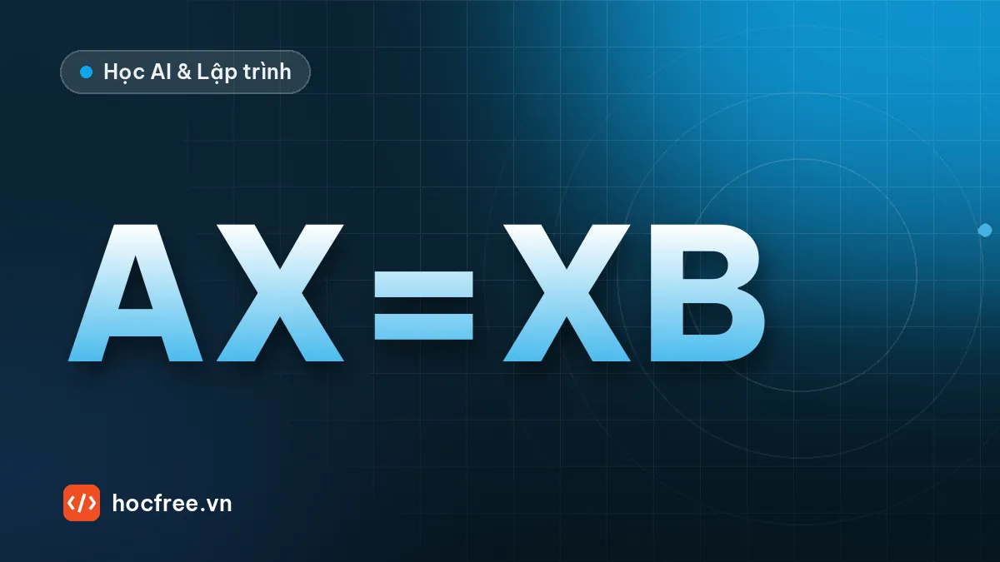

Hand-eye calibration: nối tọa độ camera với tọa độ robot
Ánh xạ pixel sang robot bằng affine và quy trình 9 điểm, bài toán AX = XB giải bằng NumPy và calibrateHandEye, eye-in-hand, eye-to-hand và nguồn sai số.

Học xong bài này, bạn sẽ
- Ánh xạ 2D pixel sang tọa độ robot
- Bài toán AX = XB với calibrateHandEye
- Nguồn sai số và cách kiểm tra
Nên học trước: Homography: đo trên mặt phẳng khi camera nghiêng
Nội dung bài viết
- 1. Hệ tọa độ và hai cách lắp camera
- 2. Trường hợp 2D: pixel → robot bằng affine
- 3. Quy trình hiệu chuẩn 9 điểm
- 4. Trường hợp 3D: phương trình AX = XB
- 5. Giải AX = XB: tự viết bằng NumPy và dùng OpenCV
- 6. Kiểm tra khi không có đáp án, và trường hợp suy biến
- 7. Eye-to-hand 3D: dùng cùng một hàm
- 8. Nguồn sai số và cách phòng tránh
- 9. Bài tập
- Tóm tắt
Camera tìm thấy chi tiết ở pixel (812,4; 440,7). Robot cần một con số khác hẳn: X, Y (và có khi cả Z, góc) theo milimét trong hệ tọa độ của robot. Bài toán nối hai hệ tọa độ này gọi là hand-eye calibration (hiệu chuẩn tay – mắt), nền của mọi ứng dụng robot gắp vật dùng vision. Bài trước, Homography: đo trên mặt phẳng khi camera nghiêng, đổi pixel sang mm của một mặt phẳng; bài này thay "mm của mặt bàn" bằng "mm của robot", rồi đi tiếp sang trường hợp 3D: tìm tư thế của camera so với mặt bích robot bằng phương trình AX = XB và cv2.calibrateHandEye. Kết quả của bài được dùng trực tiếp ở chặng sau, trong các bài TCP socket: gửi kết quả và tọa độ cho robot và Vision dẫn hướng robot gắp vật.
cv2.calibrateHandEye với 5 phương pháp, đo sai số góc và vị trí; biết cách làm cho eye-to-hand; liệt kê nguồn sai số và cách kiểm tra kết quả khi không có đáp án.1. Hệ tọa độ và hai cách lắp camera
Quy ước trong bài: T_a_b là ma trận 4 × 4 mô tả tư thế của hệ b trong hệ a, tức là nó đổi tọa độ một điểm từ hệ b sang hệ a: p_a = T_a_b · p_b. Ghép nối tiếp: T_a_c = T_a_b · T_b_c. Các hệ cần biết:
| Hệ | Ký hiệu | Ai cho biết |
|---|---|---|
| Gốc robot (base) | base | Cố định, định nghĩa bởi hãng robot |
| Mặt bích / tay robot (flange, gripper) | grip | Bộ điều khiển robot trả về T_base_grip (vị trí X, Y, Z và 3 góc) ở mọi tư thế |
| Đầu công cụ (TCP) | tcp | Khai báo trong robot (offset của giác hút, ngón kẹp); sai TCP là nguồn lỗi kinh điển |
| Camera | cam | Gốc ở tâm quang học, trục Z dọc trục quang (như bài Hiệu chuẩn camera) |
| Tấm hiệu chuẩn (target) | target | cv2.solvePnP trả về T_cam_target từ ảnh |
| Cấu hình | Camera gắn ở | Cái cố định cần tìm | Ứng dụng điển hình |
|---|---|---|---|
| Eye-to-hand | Khung máy, nhìn xuống vùng làm việc | T_base_cam (camera trong hệ robot) | Gắp vật trên băng tải, pallet; một ảnh cho cả vùng |
| Eye-in-hand | Tay robot, di chuyển theo robot | T_grip_cam (camera so với mặt bích) | Gắp trong thùng, kiểm tra nhiều vị trí, vùng làm việc rộng hơn trường nhìn |
Nếu mọi vật nằm trên một mặt phẳng và robot chỉ cần X, Y, góc xoay quanh trục đứng, ta không cần mô hình 3D: một phép biến đổi 2D (mục 2–3) là đủ và là cách được dùng nhiều nhất trong nhà máy. Mô hình 3D (mục 4–7) cần khi camera ở trên tay robot và robot nhìn từ nhiều tư thế, khi vật ở nhiều độ cao, hoặc khi cần cả tư thế 3D của vật.
2. Trường hợp 2D: pixel → robot bằng affine
Với camera cố định nhìn gần vuông góc xuống mặt phẳng làm việc (đã khử méo), quan hệ pixel → robot gần như là một phép affine:
X = a·u + b·v + c 6 tham số: tỉ lệ (2), xoay, trượt (shear), tịnh tiến (2)
Y = d·u + e·v + f ≥ 3 cặp điểm không thẳng hàng; nên dùng 6–9 cặp để có phần dư kiểm tra
Biến thể:
đồng dạng (similarity): xoay + tỉ lệ đều + tịnh tiến, 4 tham số → cv2.estimateAffinePartial2D
affine: 6 tham số → cv2.estimateAffine2D
homography: 8 tham số, khi camera nghiêng rõ (bài trước) → cv2.findHomographyChọn mô hình ít tham số nhất mà phần dư vẫn nhỏ: mô hình nhiều tham số luôn khớp các điểm hiệu chuẩn tốt hơn nhưng có thể kém hơn ở điểm mới (quá khớp). Dưới đây là bài thực hành của bài học: 6 cặp điểm pixel – robot, trong đó tọa độ robot đọc từ bộ điều khiển sau khi chạy đầu kim (TCP) chạm tâm từng dấu, có sai số tay khoảng 0,05 mm. Ta mô phỏng camera thật hơi nghiêng 1,5° để thấy giới hạn của từng mô hình, và dùng 25 điểm ngoài để kiểm chứng.
import cv2
import numpy as np
# ---- Camera ảo (đáp án): treo trên điểm (418, -32) của robot, cao 500 mm, nhìn xuống, lệch phương
# thẳng đứng 0,5°, khoảng 0,2 mm/px, trục ảnh xoay khoảng 91° so với trục robot
K = np.array([[2500.0, 0, 640], [0, 2500.0, 480], [0, 0, 1]])
R = cv2.Rodrigues(np.radians([0, 0, 91.2]))[0] @ cv2.Rodrigues(np.radians([180.5, 0.0, 0.0]))[0]
t = -R @ np.array([418.0, -32.0, 500.0]) # hệ robot (Z hướng lên) → hệ camera
G = K @ np.column_stack([R[:, 0], R[:, 1], t]) # robot (X, Y, Z = 0) → pixel
def robot_sang_px(XY):
return cv2.perspectiveTransform(np.asarray(XY, np.float64).reshape(-1, 1, 2), G).reshape(-1, 2)
rng = np.random.default_rng(11)
robot_that = np.array([[330, -110], [420, -95], [505, -120], [340, 40], [430, 55], [500, 30]], np.float64)
pixel = robot_sang_px(robot_that) + rng.normal(0, 0.1, (6, 2)) # tâm dấu tìm được trên ảnh
robot = robot_that + rng.normal(0, 0.05, (6, 2)) # tọa độ đọc khi robot chạm dấu
print("6 cặp điểm (pixel → robot mm):")
for p, r in zip(pixel, robot):
print(f" ({p[0]:7.1f}, {p[1]:6.1f}) → ({r[0]:7.2f}, {r[1]:8.2f})")
M, inl = cv2.estimateAffine2D(pixel, robot, method=cv2.LMEDS) # 6 tham số
print("Ma trận affine 2 × 3:\n", np.round(M, 5))
def ap_dung(M, P):
return np.asarray(P) @ M[:, :2].T + M[:, 2]
du = np.linalg.norm(ap_dung(M, pixel) - robot, axis=1)
print("Phần dư từng điểm (mm):", np.round(du, 3).tolist())
print(f"Sai số trung bình {du.mean():.3f} mm, lớn nhất {du.max():.3f} mm")
sx, sy = np.hypot(*M[:, 0]), np.hypot(*M[:, 1])
print(f"Tỉ lệ {sx:.5f} / {sy:.5f} mm/px, định thức {np.linalg.det(M[:, :2]):+.5f}")6 cặp điểm (pixel → robot mm):
( 281.6, 33.1) → ( 330.03, -110.01)
( 347.1, 483.8) → ( 419.98, -94.98)
( 213.4, 905.5) → ( 505.04, -120.01)
( 1030.4, 97.6) → ( 339.99, 40.03)
( 1096.2, 549.5) → ( 429.96, 54.92)
( 963.7, 897.3) → ( 500.02, 29.97)
Ma trận affine 2 × 3:
[[-4.2300000e-03 2.0004000e-01 3.2469796e+02]
[ 1.9990000e-01 4.1300000e-03 -1.6640052e+02]]
Phần dư từng điểm (mm): [0.103, 0.049, 0.12, 0.14, 0.078, 0.106]
Sai số trung bình 0.099 mm, lớn nhất 0.140 mm
Tỉ lệ 0.19994 / 0.20008 mm/px, định thức -0.04000Ma trận cho thấy đúng bức tranh vật lý: tỉ lệ khoảng 0,2 mm/px theo cả hai chiều, trục u của ảnh gần song song trục Y robot, trục v gần song song trục X. Định thức của phần 2 × 2 âm: phép biến đổi có một phép lật (soi gương). Đây không phải lỗi mà là hình học bắt buộc: camera nhìn xuống có trục Z hướng xuống, robot có trục Z hướng lên, nên nhìn từ trên, hệ (u, v) và hệ (X, Y) ngược chiều nhau. Phần dư trung bình khoảng 0,1 mm: cỡ sai số chạm tay cộng nhiễu tìm tâm cộng phần phối cảnh do nghiêng 0,5° mà affine không mô tả được. Chú ý: phần dư trên chính các điểm dùng để fit luôn lạc quan. Con số đáng tin là sai số trên điểm mới.
import cv2
import numpy as np
# 25 điểm kiểm chứng trải đều vùng làm việc (trong mô phỏng ta biết đáp án; ngoài đời: robot chạm thêm dấu mới)
gx, gy = np.meshgrid(np.linspace(320, 515, 5), np.linspace(-125, 60, 5))
kiem_robot = np.column_stack([gx.ravel(), gy.ravel()])
kiem_px = robot_sang_px(kiem_robot)
Mp, _ = cv2.estimateAffinePartial2D(pixel, robot, method=cv2.LMEDS) # 4 tham số, KHÔNG biểu diễn được phép lật
lat = np.array([1.0, -1.0]) # đổi dấu v trước để bỏ phép lật
Ml, _ = cv2.estimateAffinePartial2D(pixel * lat, robot, method=cv2.LMEDS)
Hh, _ = cv2.findHomography(pixel, robot) # 8 tham số
du_doan = {"đồng dạng (u, v)": ap_dung(Mp, kiem_px), "đồng dạng (u, -v)": ap_dung(Ml, kiem_px * lat),
"affine (6)": ap_dung(M, kiem_px),
"homography (8)": cv2.perspectiveTransform(kiem_px.reshape(-1, 1, 2), Hh).reshape(-1, 2)}
for ten, P in du_doan.items():
e = np.linalg.norm(P - kiem_robot, axis=1)
print(f"{ten:17s}: điểm mới sai trung bình {e.mean():.3f} mm, lớn nhất {e.max():.3f} mm")đồng dạng (u, v) : điểm mới sai trung bình 89.873 mm, lớn nhất 139.849 mm
đồng dạng (u, -v): điểm mới sai trung bình 0.107 mm, lớn nhất 0.178 mm
affine (6) : điểm mới sai trung bình 0.111 mm, lớn nhất 0.212 mm
homography (8) : điểm mới sai trung bình 0.035 mm, lớn nhất 0.098 mmBốn dòng kể bốn bài học:
estimateAffinePartial2Dtrên (u, v) sai gần 90 mm: phép đồng dạng chỉ có xoay, không có lật. Đây là lỗi thật hay gặp khi lập trình 2D hand-eye "bằng tay" với góc xoay và tỉ lệ. Đổi dấu v trước (hoặc dùng affine) là hết.- Đồng dạng trên (u, −v) và affine cho sai số cỡ 0,1–0,2 mm ở điểm mới: phần còn lại chủ yếu là phối cảnh do nghiêng 0,5°.
- Homography mô tả đúng phối cảnh nên tốt nhất ở đây. Nhưng với chỉ 6 điểm, 8 tham số có ít dư để chống nhiễu; khi camera gần vuông góc và dữ liệu nhiễu hơn, nó có thể kém affine trên điểm mới.
- Quy tắc: camera chỉnh vuông góc tốt thì affine là đủ; camera nghiêng rõ thì dùng homography với ≥ 9 điểm. Quyết định bằng sai số trên điểm mới, không bằng phần dư.
3. Quy trình hiệu chuẩn 9 điểm
Phần mềm vision thương mại và tài liệu của các hãng robot gọi đây là hiệu chuẩn N điểm (thường 9 điểm). Có hai cách lấy cặp điểm:
| Cách | Làm thế nào | Ưu, nhược |
|---|---|---|
| Robot chạm dấu | Đặt tấm có 9 dấu trong vùng làm việc, chụp ảnh lấy tâm dấu; chạy robot cho đầu kim chạm tâm từng dấu, ghi X, Y | Đơn giản; sai số chạm tay 0,05–0,2 mm tùy người và đầu kim |
| Robot mang dấu | Robot kẹp một chi tiết/dấu, đặt (hoặc giữ) lần lượt ở 9 vị trí lưới 3 × 3, mỗi vị trí camera chụp một ảnh | Tự động hóa được hoàn toàn, lặp lại tốt; cần dấu nằm đúng TCP và đúng độ cao làm việc |
- Khử méo ống kính (bài Hiệu chuẩn camera) và cố định lấy nét, độ phân giải.
- Chọn 9 vị trí lưới 3 × 3 phủ toàn bộ vùng gắp (không chỉ giữa ảnh), ở đúng độ cao gắp (bài trước: chênh cao làm lệch vị trí).
- Thu cặp điểm, tính affine (hoặc homography), in phần dư từng điểm.
- Kiểm chứng chéo bỏ-một (leave-one-out): fit bằng 8 điểm, dự đoán điểm thứ 9, lặp 9 lần. Đây là ước lượng trung thực của sai số trên điểm mới khi không có thêm dữ liệu.
- Thử thật: đặt chi tiết ở 3–5 vị trí mới, cho robot gắp hoặc chạm, đo độ lệch. Tiêu chí thường dùng: sai số lớn nhất nhỏ hơn khoảng 1/3 dung sai gắp (khe hở của ngón kẹp, đường kính giác hút so với chi tiết).
- Lưu ma trận kèm ngày, độ cao, danh sách cặp điểm và ảnh.
import cv2
import numpy as np
rng = np.random.default_rng(5)
luoi = np.array([(X, Y) for Y in (-120.0, -30.0, 60.0) for X in (325.0, 420.0, 515.0)]) # 3 × 3 vị trí robot
px9 = robot_sang_px(luoi) + rng.normal(0, 0.1, (9, 2))
rb9 = luoi + rng.normal(0, 0.02, (9, 2)) # robot mang dấu: lặp lại tốt hơn chạm tay
M9, _ = cv2.estimateAffine2D(px9, rb9, method=cv2.LMEDS)
du = np.linalg.norm(ap_dung(M9, px9) - rb9, axis=1)
loo = []
for i in range(9):
giu = np.arange(9) != i
Mi, _ = cv2.estimateAffine2D(px9[giu], rb9[giu], method=cv2.LMEDS)
loo.append(np.linalg.norm(ap_dung(Mi, px9[i:i + 1])[0] - rb9[i]))
print("điểm | phần dư (mm) | bỏ-một (mm)")
for i in range(9):
print(f" {i + 1} | {du[i]:.3f} | {loo[i]:.3f}")
print(f"Phần dư lớn nhất {du.max():.3f} mm; bỏ-một lớn nhất {max(loo):.3f} mm, trung bình {np.mean(loo):.3f} mm")
u, v = 812.4, 440.7
X, Y = ap_dung(M9, [[u, v]])[0]
print(f"Chi tiết tại pixel ({u}, {v}) → robot X = {X:.2f} mm, Y = {Y:.2f} mm")điểm | phần dư (mm) | bỏ-một (mm)
1 | 0.122 | 0.245
2 | 0.036 | 0.045
3 | 0.114 | 0.288
4 | 0.121 | 0.207
5 | 0.075 | 0.106
6 | 0.109 | 0.144
7 | 0.207 | 0.207
8 | 0.126 | 0.100
9 | 0.129 | 0.264
Phần dư lớn nhất 0.207 mm; bỏ-một lớn nhất 0.288 mm, trung bình 0.178 mm
Chi tiết tại pixel (812.4, 440.7) → robot X = 409.38 mm, Y = -2.14 mmSai số bỏ-một nhìn chung lớn hơn phần dư (đúng như mong đợi) và lớn nhất ở các điểm góc lưới (1, 3, 9): khi bỏ điểm góc, mô hình phải ngoại suy. Đó là lý do lưới phải phủ hết vùng gắp. Con số cuối cùng là thứ phần mềm vision gửi cho robot qua TCP/IP hoặc PLC.
4. Trường hợp 3D: phương trình AX = XB
Xét eye-in-hand: camera gắn trên tay robot, tấm hiệu chuẩn đặt cố định trên bàn. Ở mỗi tư thế i, robot cho T_base_grip(i), ảnh cho T_cam_target(i) (bằng solvePnP). Ẩn số là X = T_grip_cam (cố định vì camera bắt vít vào tay). Tấm hiệu chuẩn không di chuyển nên với mọi tư thế:
T_base_target = T_base_grip(i) · X · T_cam_target(i) = hằng số
Lấy hai tư thế i, j rồi chuyển vế:
[T_base_grip(j)⁻¹ · T_base_grip(i)] · X = X · [T_cam_target(j) · T_cam_target(i)⁻¹]
A B
⇒ A · X = X · B (A: chuyển động của tay giữa hai tư thế, B: chuyển động tương ứng thấy qua camera)Tách phần quay và tịnh tiến: R_A · R_X = R_X · R_B (giải được R_X), rồi (R_A − I) · t_X = R_X · t_B − t_A (tuyến tính theo t_X). Điều kiện cần: các chuyển động phải có trục quay khác nhau, ít nhất hai trục không song song. Chỉ tịnh tiến, hoặc chỉ xoay quanh một trục, thì bài toán suy biến (mục 6).
Code dưới dựng mô phỏng có đáp án: X thật (camera lệch khỏi mặt bích 32, −48, 85 mm và xoay khoảng 91° quanh trục mặt bích), 15 tư thế robot nhìn tấm bàn cờ từ nhiều góc. Ảnh được thay bằng góc bàn cờ chiếu qua K cộng nhiễu 0,1 px, rồi solvePnP tính T_cam_target như với ảnh thật; tư thế robot có sai số lặp lại 0,05 mm và 0,01°.
import cv2
import numpy as np
def T(R, t):
M = np.eye(4)
M[:3, :3], M[:3, 3] = R, np.ravel(t)
return M
def nghich(M):
R, t = M[:3, :3], M[:3, 3]
return T(R.T, -R.T @ t)
def R_tu_vec(do): # vector quay (độ) → ma trận quay
return cv2.Rodrigues(np.radians(np.asarray(do, np.float64)))[0]
X_THAT = T(R_tu_vec([2.0, -1.5, 91.0]), [32.0, -48.0, 85.0]) # đáp án: T_grip_cam
T_BASE_TARGET = T(R_tu_vec([180.0, 0, 0]), [600.0, 50.0, 0.0]) # tấm bàn cờ nằm trên bàn
K = np.array([[1600.0, 0, 640], [0, 1600.0, 480], [0, 0, 1]])
objp = np.zeros((54, 3))
objp[:, :2] = np.mgrid[0:9, 0:6].T.reshape(-1, 2) * 20.0
def mo_phong(n, seed, goc_max=25.0):
"""Trả về 4 danh sách R_gripper2base, t_gripper2base, R_target2cam, t_target2cam như OpenCV yêu cầu."""
rng = np.random.default_rng(seed)
Rg, tg, Rt, tt = [], [], [], []
while len(Rg) < n:
goc = rng.uniform(-goc_max, goc_max, 3)
Rct = R_tu_vec(goc)
tct = np.array([*rng.uniform(-30, 30, 2), rng.uniform(260, 340)]) - Rct @ np.array([80.0, 50.0, 0])
uv = cv2.projectPoints(objp, cv2.Rodrigues(Rct)[0], tct, K, None)[0]
if uv.min() < 30 or uv[..., 0].max() > 1250 or uv[..., 1].max() > 930:
continue # bàn cờ ra ngoài ảnh
T_bg = T_BASE_TARGET @ nghich(T(Rct, tct)) @ nghich(X_THAT) # tư thế robot tương ứng
ok, rv, tv = cv2.solvePnP(objp, uv + rng.normal(0, 0.1, uv.shape), K, None)
Rg.append(T_bg[:3, :3] @ R_tu_vec(rng.normal(0, 0.01, 3)))
tg.append(T_bg[:3, 3] + rng.normal(0, 0.05, 3))
Rt.append(cv2.Rodrigues(rv)[0])
tt.append(tv.ravel())
return Rg, tg, Rt, tt
def sai_so(R, t):
"""Sai lệch góc (độ) và vị trí (mm) so với đáp án."""
dR = R.T @ X_THAT[:3, :3]
return np.degrees(np.linalg.norm(cv2.Rodrigues(dR)[0])), np.linalg.norm(np.ravel(t) - X_THAT[:3, 3])
Rg, tg, Rt, tt = mo_phong(15, seed=4)
print(f"Đã mô phỏng {len(Rg)} tư thế; ví dụ tư thế 1: tay robot tại {np.round(tg[0], 1)} mm, "
f"bàn cờ cách camera {np.linalg.norm(tt[0]):.0f} mm")Đã mô phỏng 15 tư thế; ví dụ tư thế 1: tay robot tại [599.7 88.7 368.6] mm, bàn cờ cách camera 271 mm5. Giải AX = XB: tự viết bằng NumPy và dùng OpenCV
Phương pháp của Park và Martin dễ hiểu nhất: (1) với mỗi cặp tư thế, lấy vector quay α của R_A và β của R_B (dạng trục–góc). Từ R_A = R_X · R_B · R_Xᵀ suy ra α = R_X · β: tìm phép quay R_X đưa tập β trùng tập α nhất, đây là bài toán Kabsch giải bằng SVD. (2) Có R_X, giải t_X từ hệ tuyến tính (R_A − I) · t_X = R_X · t_B − t_A bằng bình phương tối thiểu.
import cv2
import numpy as np
def hand_eye_park(Rg, tg, Rt, tt):
"""Giải A·X = X·B (eye-in-hand), trả về R, t của T_grip_cam. Dùng mọi cặp tư thế i < j."""
Tg = [T(r, t) for r, t in zip(Rg, tg)]
Tt = [T(r, t) for r, t in zip(Rt, tt)]
al, be, cap = [], [], []
for i in range(len(Tg)):
for j in range(i + 1, len(Tg)):
A = nghich(Tg[j]) @ Tg[i]
B = Tt[j] @ nghich(Tt[i])
al.append(cv2.Rodrigues(A[:3, :3])[0].ravel())
be.append(cv2.Rodrigues(B[:3, :3])[0].ravel())
cap.append((A, B))
U, _, Vt = np.linalg.svd(np.array(be).T @ np.array(al)) # Kabsch: R·β ≈ α
D = np.diag([1.0, 1.0, np.sign(np.linalg.det(Vt.T @ U.T))])
R = Vt.T @ D @ U.T
C = np.vstack([A[:3, :3] - np.eye(3) for A, B in cap])
d = np.hstack([R @ B[:3, 3] - A[:3, 3] for A, B in cap])
t = np.linalg.lstsq(C, d, rcond=None)[0]
return R, t
R_np, t_np = hand_eye_park(Rg, tg, Rt, tt)
e_goc, e_vt = sai_so(R_np, t_np)
print("t_grip_cam tìm được:", np.round(t_np, 2), " đáp án:", X_THAT[:3, 3])
print(f"NumPy (Park–Martin): sai góc {e_goc:.4f}°, sai vị trí {e_vt:.3f} mm")t_grip_cam tìm được: [ 32.07 -47.99 85.05] đáp án: [ 32. -48. 85.]
NumPy (Park–Martin): sai góc 0.0149°, sai vị trí 0.084 mmVới dữ liệu tốt, sai số cỡ 0,01° và vài phần trăm milimét. Thực tế sẽ lớn hơn nhiều (thường 0,1–1 mm) vì sai số tư thế robot thật, sai số K, bàn cờ không phẳng. OpenCV có sẵn hàm cv2.calibrateHandEye với 5 phương pháp. Thứ tự tham số: tư thế tay trong hệ gốc (gripper2base), tư thế tấm trong hệ camera (target2cam), kết quả là cam2gripper, đúng T_grip_cam của ta.
import cv2
import numpy as np
if not hasattr(cv2, "calibrateHandEye"):
print(f"OpenCV {cv2.__version__}: Python binding không có calibrateHandEye, dùng hàm NumPy ở trên")
else:
print(f"OpenCV {cv2.__version__}")
for ten in ("TSAI", "PARK", "HORAUD", "ANDREFF", "DANIILIDIS"):
R_cv, t_cv = cv2.calibrateHandEye(Rg, tg, Rt, tt, method=getattr(cv2, "CALIB_HAND_EYE_" + ten))
e_goc, e_vt = sai_so(R_cv, t_cv)
print(f" {ten:11s}: sai góc {e_goc:.4f}°, sai vị trí {e_vt:.3f} mm")OpenCV 5.0.0: Python binding không có calibrateHandEye, dùng hàm NumPy ở trênTrong môi trường kiểm thử bài này (opencv-python-headless 5.0.0), Python binding không có hàm calibrateHandEye dù các hằng số CALIB_HAND_EYE_* vẫn có, nên code in ra dòng trên. Đó là lý do bài dạy cả cách tự giải bằng NumPy. Chạy cùng đoạn code với OpenCV 4.14 (pip install "opencv-python<5"), cùng dữ liệu mô phỏng, được:
OpenCV 4.14.0
TSAI : sai góc 0.0150°, sai vị trí 0.085 mm
PARK : sai góc 0.0149°, sai vị trí 0.084 mm
HORAUD : sai góc 0.0150°, sai vị trí 0.084 mm
ANDREFF : sai góc 0.0101°, sai vị trí 0.130 mm
DANIILIDIS : sai góc 0.0269°, sai vị trí 0.121 mm- Hàm NumPy ở trên cho kết quả trùng với
CALIB_HAND_EYE_PARKcủa OpenCV (0,0149°, 0,084 mm). - TSAI, PARK, HORAUD giải phần quay trước rồi tịnh tiến sau; DANIILIDIS (dual quaternion) giải đồng thời; ANDREFF giải một hệ tuyến tính chung cho cả quay và tịnh tiến. Ở đây cả 5 phương pháp cho sai vị trí 0,08–0,13 mm; với dữ liệu nhiễu hơn hoặc ít tư thế hơn, khác biệt giữa chúng lớn hơn nhiều. Không có phương pháp "tốt nhất mọi lúc": hãy chạy vài phương pháp; nếu kết quả lệch nhau nhiều (hàng milimét), dữ liệu có vấn đề (tư thế ít đa dạng, sai quy ước góc, ghép nhầm cặp ảnh – tư thế).
6. Kiểm tra khi không có đáp án, và trường hợp suy biến
Ngoài đời không có X_THAT. Phép kiểm tra tự nhiên: với X tìm được, tính T_base_target = T_base_grip(i) · X · T_cam_target(i) cho từng tư thế. Tấm hiệu chuẩn không di chuyển, nên mọi kết quả phải trùng nhau; độ phân tán chính là sai số thực tế của cả chuỗi (robot + camera + hiệu chuẩn). Cũng thử xem điều gì xảy ra khi các tư thế gần như chỉ tịnh tiến, xoay rất ít (lỗi hay gặp khi người vận hành ngại xoay robot vì sợ mất bàn cờ khỏi ảnh):
import numpy as np
def kiem_tra_nhat_quan(R, t, Rg, tg, Rt, tt):
"""Độ phân tán (mm) của vị trí tấm hiệu chuẩn trong hệ base, tính qua từng tư thế."""
X = T(R, t)
P = np.array([(T(rg, tg_) @ X @ T(rt, tt_))[:3, 3] for rg, tg_, rt, tt_ in zip(Rg, tg, Rt, tt)])
return np.linalg.norm(P - P.mean(axis=0), axis=1).max()
print(f"Bộ 15 tư thế đa dạng: phân tán lớn nhất {kiem_tra_nhat_quan(R_np, t_np, Rg, tg, Rt, tt):.3f} mm")
X_sai = T(R_np, t_np + np.array([2.0, 0, 0])) # giả sử kết quả sai 2 mm theo x
print(f"Nếu X sai 2 mm theo x: phân tán {kiem_tra_nhat_quan(X_sai[:3, :3], X_sai[:3, 3], Rg, tg, Rt, tt):.3f} mm")
Rz, tz, Rtz, ttz = mo_phong(15, seed=8, goc_max=3.0) # tư thế chỉ lệch nhau vài độ
R_z, t_z = hand_eye_park(Rz, tz, Rtz, ttz)
e_goc, e_vt = sai_so(R_z, t_z)
print(f"Tư thế chỉ xoay ±3°: sai góc {e_goc:.3f}°, sai vị trí {e_vt:.2f} mm, "
f"nhưng phân tán chỉ {kiem_tra_nhat_quan(R_z, t_z, Rz, tz, Rtz, ttz):.3f} mm")Bộ 15 tư thế đa dạng: phân tán lớn nhất 0.222 mm
Nếu X sai 2 mm theo x: phân tán 0.942 mm
Tư thế chỉ xoay ±3°: sai góc 0.113°, sai vị trí 1.47 mm, nhưng phân tán chỉ 0.227 mm- Với bộ tư thế tốt, phân tán khoảng 0,2 mm (chủ yếu do
solvePnPkém chính xác theo chiều sâu và sai số tư thế robot); X sai 2 mm làm phân tán tăng gấp 4 lần, vì sai số đi theo hướng xoay của tay ở từng tư thế. - Bộ tư thế chỉ xoay ±3° cho X sai gần 1,5 mm (gấp hàng chục lần bộ tốt), nhưng phép kiểm tra nhất quán vẫn "đẹp" như bộ tốt: khi các tư thế gần giống nhau, một X sai vẫn giải thích được dữ liệu, sai số chỉ lộ ra ở tư thế mới. Nếu robot hoàn toàn chỉ tịnh tiến hoặc chỉ xoay quanh một trục, bài toán suy biến hẳn và kết quả có thể vô nghĩa. Vì vậy: (1) luôn thiết kế tư thế xoay quanh ít nhất hai trục khác nhau, góc giữa các tư thế 20–40°; (2) kiểm chứng bằng thử thật ở tư thế mới: cho robot đưa đầu kim tới một góc bàn cờ do camera tính ra và đo độ lệch.
7. Eye-to-hand 3D: dùng cùng một hàm
Khi camera cố định và tấm hiệu chuẩn gắn trên tay robot, cái không đổi là T_grip_target = T_base_grip(i)⁻¹ · T_base_cam · T_cam_target(i). Phương trình có cùng dạng với eye-in-hand nếu thay T_base_grip bằng nghịch đảo của nó (T_grip_base). Tài liệu OpenCV hướng dẫn đúng như vậy: truyền tư thế base2gripper thay cho gripper2base, kết quả nhận được là cam2base, tức T_base_cam. Bài tập 2 làm điều này với hàm NumPy.
8. Nguồn sai số và cách phòng tránh
| Nguồn sai số | Biểu hiện | Phòng tránh, kiểm tra |
|---|---|---|
| Quy ước góc của robot (Euler XYZ, ZYX, ZYZ; độ hay radian; quaternion w đầu hay cuối) | Sai hàng chục milimét, các phương pháp cho kết quả rất khác nhau | Đọc tài liệu hãng; thử đổi một tư thế đã biết sang ma trận rồi so với màn hình teach pendant (bài tập 3) |
| Đơn vị khác nhau (robot m, bàn cờ mm) | Tịnh tiến sai cả nghìn lần | Thống nhất mm cho mọi tịnh tiến |
| Ghép nhầm ảnh với tư thế (ảnh chụp khi robot chưa dừng hẳn) | Một vài tư thế có phân tán lớn bất thường | Chụp sau khi robot báo "đã tới"; in phân tán từng tư thế, loại tư thế bất thường |
| K, hệ số méo sai; cạnh ô bàn cờ khai báo sai | T_cam_target sai tỉ lệ, X sai theo khoảng cách | Hiệu chuẩn nội tại tốt trước; đo cạnh ô thực tế |
| Tư thế ít đa dạng | Một thành phần của X sai lớn, kiểm tra nhất quán không phát hiện được | 10–20 tư thế, xoay quanh ít nhất hai trục, mỗi tư thế lệch nhau 20–40° |
| Sai số tuyệt đối của robot | Đúng ở vùng hiệu chuẩn, lệch dần ở vùng khác | Hiệu chuẩn trong đúng vùng làm việc; robot có độ lặp lại cao (cỡ ±0,02–0,05 mm) nhưng độ chính xác tuyệt đối kém hơn nhiều |
| TCP khai báo sai; độ cao gắp khác độ cao hiệu chuẩn (2D) | Sai phụ thuộc góc xoay; sai đều một hướng | Hiệu chuẩn TCP trước; hiệu chuẩn ở đúng độ cao gắp |
| Camera, giá đỡ bị va chạm; nhiệt độ | Trôi dần theo ngày, hoặc lệch đột ngột sau bảo trì | Kiểm tra định kỳ bằng dấu chuẩn (bài Kiểm tra hiệu chuẩn định kỳ) |
9. Bài tập
Bài 1 (bài thực hành của bài học). Mô phỏng: cho 6 cặp điểm pixel – tọa độ robot, tính phép biến đổi affine và sai số trung bình. Dữ liệu (pixel → robot mm): (100, 80) → (340,23; −146,36), (640, 95) → (341,03; −38,00), (1180, 70) → (333,89; 69,70), (110, 860) → (496,25; −140,96), (650, 880) → (497,90; −32,52), (1170, 850) → (489,64; 70,95). Không dùng OpenCV, tự giải bình phương tối thiểu bằng NumPy rồi so với cv2.estimateAffine2D. Pixel (812,4; 440,7) ứng với tọa độ robot nào?
Xem đáp án
import cv2
import numpy as np
px = np.array([[100, 80], [640, 95], [1180, 70], [110, 860], [650, 880], [1170, 850]], np.float64)
rb = np.array([[340.23, -146.36], [341.03, -38.00], [333.89, 69.70],
[496.25, -140.96], [497.90, -32.52], [489.64, 70.95]])
A = np.column_stack([px, np.ones(len(px))]) # mỗi hàng [u, v, 1]
he_so, *_ = np.linalg.lstsq(A, rb, rcond=None) # 3 × 2: cột 0 cho X, cột 1 cho Y
M = he_so.T # dạng 2 × 3 như OpenCV
du = np.linalg.norm(A @ he_so - rb, axis=1)
print("Affine (NumPy):\n", np.round(M, 5))
print("Phần dư (mm):", np.round(du, 3).tolist(), f"→ trung bình {du.mean():.3f} mm")
M_cv, _ = cv2.estimateAffine2D(px, rb, method=cv2.LMEDS)
print("Chênh lệch lớn nhất giữa NumPy và OpenCV:", f"{np.abs(M_cv - M).max():.2e}")
X, Y = M @ [812.4, 440.7, 1.0]
print(f"Pixel (812.4, 440.7) → robot ({X:.2f}, {Y:.2f}) mm")Affine (NumPy):
[[-4.1800000e-03 1.9986000e-01 3.2473772e+02]
[ 2.0003000e-01 4.3300000e-03 -1.6659642e+02]]
Phần dư (mm): [0.138, 0.167, 0.105, 0.127, 0.247, 0.191] → trung bình 0.162 mm
Chênh lệch lớn nhất giữa NumPy và OpenCV: 2.29e-06
Pixel (812.4, 440.7) → robot (409.42, -2.18) mmTỉ lệ khoảng 0,2 mm/px, trục u của ảnh gần song song trục Y robot, trục v song song trục X, và định thức âm (có phép lật, như mục 2). Phần dư trung bình khoảng 0,16 mm. estimateAffine2D với LMEDS có thể khác nghiệm bình phương tối thiểu một chút vì nó tìm nghiệm bền vững rồi tinh chỉnh trên các điểm được giữ lại; với dữ liệu sạch hai cách gần như trùng nhau. Trong báo cáo, ghi cả phần dư từng điểm và nhớ rằng con số này lạc quan: cần thêm điểm kiểm chứng như mục 3.
Bài 2. Eye-to-hand: camera cố định ở T_base_cam (đáp án tự chọn), bàn cờ kẹp trên tay robot. Mô phỏng 15 tư thế, rồi dùng hand_eye_park với tư thế robot đã nghịch đảo để tìm T_base_cam. Báo cáo sai số.
Xem đáp án
import cv2
import numpy as np
CAM_THAT = T(R_tu_vec([178.0, 3.0, -88.0]), [520.0, -60.0, 900.0]) # đáp án: T_base_cam
GRIP_TARGET = T(R_tu_vec([0, 0, 0]), [-80.0, -50.0, 40.0]) # bàn cờ gắn dưới mặt bích
rng = np.random.default_rng(21)
Rgb, tgb, Rt2, tt2 = [], [], [], []
while len(Rgb) < 15:
Rct = R_tu_vec(rng.uniform(-25, 25, 3))
tct = np.array([*rng.uniform(-60, 60, 2), rng.uniform(550, 700)]) - Rct @ np.array([80.0, 50.0, 0])
uv = cv2.projectPoints(objp, cv2.Rodrigues(Rct)[0], tct, K, None)[0]
if uv.min() < 30 or uv[..., 0].max() > 1250 or uv[..., 1].max() > 930:
continue
T_bg = CAM_THAT @ T(Rct, tct) @ nghich(GRIP_TARGET) # tư thế tay tương ứng
T_gb = nghich(T(T_bg[:3, :3] @ R_tu_vec(rng.normal(0, 0.01, 3)), T_bg[:3, 3] + rng.normal(0, 0.05, 3)))
ok, rv, tv = cv2.solvePnP(objp, uv + rng.normal(0, 0.1, uv.shape), K, None)
Rgb.append(T_gb[:3, :3]) # base2gripper: ĐÃ nghịch đảo
tgb.append(T_gb[:3, 3])
Rt2.append(cv2.Rodrigues(rv)[0])
tt2.append(tv.ravel())
R_bc, t_bc = hand_eye_park(Rgb, tgb, Rt2, tt2) # kết quả: T_base_cam
dR = R_bc.T @ CAM_THAT[:3, :3]
print("T_base_cam tìm được, phần tịnh tiến:", np.round(t_bc, 2))
print(f"Sai góc {np.degrees(np.linalg.norm(cv2.Rodrigues(dR)[0])):.4f}°, "
f"sai vị trí {np.linalg.norm(t_bc - CAM_THAT[:3, 3]):.3f} mm")T_base_cam tìm được, phần tịnh tiến: [519.9 -60.71 899.99]
Sai góc 0.0351°, sai vị trí 0.715 mmCùng một hàm giải được cả hai cấu hình, chỉ khác dữ liệu vào. Sai số vị trí ở đây (0,7 mm) lớn hơn eye-in-hand gần 10 lần: bàn cờ ở xa camera hơn (550–700 mm) nên solvePnP kém chính xác theo chiều sâu, và camera cách gốc robot gần 1 m nên sai số góc nhỏ cũng thành sai số vị trí đáng kể. Muốn tốt hơn: bàn cờ lớn hơn, nhiều tư thế hơn, camera có độ phân giải cao hơn.
Bài 3. Bộ điều khiển robot hiển thị tư thế dạng (X, Y, Z, Rx, Ry, Rz) với góc Euler "ZYX" (quay quanh Z trước, rồi Y mới, rồi X mới, tương đương R = Rz·Ry·Rx). Một kỹ sư đổi sang ma trận theo thứ tự ngược (R = Rx·Ry·Rz). Với tư thế Rx = 175°, Ry = −8°, Rz = 30°, hai ma trận chênh nhau bao nhiêu độ? Một điểm cách mặt bích 150 mm bị đặt lệch bao nhiêu?
Xem đáp án
import cv2
import numpy as np
def Rx(a):
c, s = np.cos(np.radians(a)), np.sin(np.radians(a))
return np.array([[1, 0, 0], [0, c, -s], [0, s, c]])
def Ry(a):
c, s = np.cos(np.radians(a)), np.sin(np.radians(a))
return np.array([[c, 0, s], [0, 1, 0], [-s, 0, c]])
def Rz(a):
c, s = np.cos(np.radians(a)), np.sin(np.radians(a))
return np.array([[c, -s, 0], [s, c, 0], [0, 0, 1]])
rx, ry, rz = 175.0, -8.0, 30.0
dung = Rz(rz) @ Ry(ry) @ Rx(rx) # ZYX (quay quanh trục mới) = Rz·Ry·Rx
sai = Rx(rx) @ Ry(ry) @ Rz(rz)
goc = np.degrees(np.linalg.norm(cv2.Rodrigues(dung.T @ sai)[0]))
p = np.array([0, 0, 150.0]) # điểm trên trục dụng cụ, cách mặt bích 150 mm
print(f"Hai ma trận chênh {goc:.1f}°; điểm cách mặt bích 150 mm lệch {np.linalg.norm(dung @ p - sai @ p):.1f} mm")Hai ma trận chênh 62.0°; điểm cách mặt bích 150 mm lệch 47.0 mmChỉ một lỗi thứ tự nhân đã làm sai hàng chục độ và hàng chục milimét. Hãng robot khác nhau dùng quy ước khác nhau (có hãng dùng ZYZ, có hãng dùng vector quay hoặc quaternion), có khi khác cả giữa các dòng robot của cùng hãng. Luôn kiểm tra bằng một tư thế dễ hình dung (ví dụ chỉ xoay 90° quanh một trục) trước khi thu dữ liệu hiệu chuẩn.
Tóm tắt
- Eye-to-hand tìm T_base_cam, eye-in-hand tìm T_grip_cam. Viết rõ quy ước T_a_b và ghép ma trận theo đúng thứ tự.
- Vật trên một mặt phẳng: pixel → robot bằng đồng dạng/affine (≥ 3 cặp, nên 9), homography nếu camera nghiêng. Quy trình 9 điểm ở đúng độ cao gắp, phủ hết vùng gắp, báo cáo phần dư và sai số bỏ-một, rồi thử gắp thật.
- 3D: T_base_grip(i) · X · T_cam_target(i) không đổi ⇒ A·X = X·B. Giải phần quay (Kabsch trên vector quay) rồi tịnh tiến (bình phương tối thiểu);
cv2.calibrateHandEyecó 5 phương pháp (TSAI, PARK, HORAUD, ANDREFF, DANIILIDIS) ở OpenCV 4.x; bản Python 5.0.0 dùng để kiểm thử bài không có hàm này. - Eye-to-hand: cùng hàm, truyền tư thế robot đã nghịch đảo (base2gripper), nhận cam2base.
- Kiểm tra: độ phân tán của tấm hiệu chuẩn trong hệ base qua các tư thế, so nhiều phương pháp, và thử chạm/gắp thật ở tư thế mới. Tư thế phải xoay quanh ít nhất hai trục; quy ước góc Euler là bẫy số một.
Bài tiếp theo: Kiểm tra hiệu chuẩn định kỳ: làm sao biết mỗi sáng rằng các hiệu chuẩn ở chặng này vẫn còn đúng.
Bài tập thực hành
- Mô phỏng: cho 6 cặp điểm pixel – tọa độ robot, tính phép biến đổi affine và sai số trung bình.
Làm xong bài tập mới chuyển sang bài tiếp theo: tự viết code là cách duy nhất để nhớ lâu.